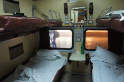
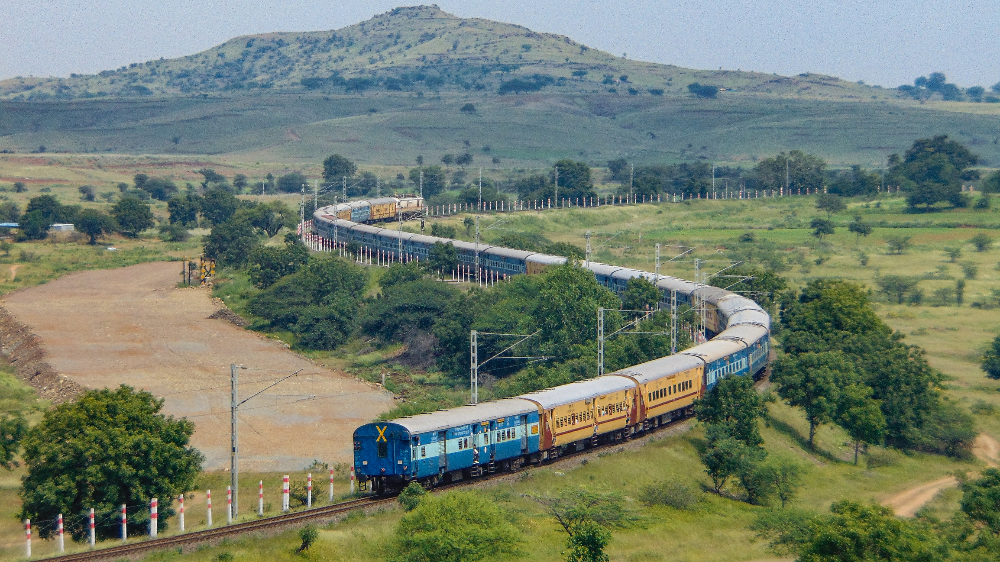
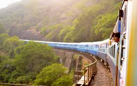

December, 2023
Riding the Rails in India: A Whirlwind Adventure
Hey everyone!
 So, I just got back from an epic journey through India, and let me tell you, the Indian railways are a whole different ball game! I hopped on the overnight train, and boy, was it an experience I'll never forget.
As I settled into my seat, the rhythmic chugging of the train and the lively chatter of fellow passengers created a symphony of sounds. The train was like a microcosm of India itself - diverse, vibrant, and full of surprises.

The setting was straight out of a Bollywood movie. The vibrant hues of the bustling platform, the aromatic scent of street food wafting through the air, and the constant hustle and bustle made my heart race with excitement. I could feel the pulse of India in every beat of the train's wheels.
As the train started its journey, I gazed out of the window, mesmerized by the kaleidoscope of landscapes unfolding before me. From bustling cityscapes to serene countryside, the contrasts were stark and beautiful. It was like flipping through the pages of an ever-changing picture book.
Midway through the journey, an unexpected encounter added a delightful twist to my adventure. I found myself sharing my compartment with a family celebrating a joyous occasion. They graciously invited me to join in their festivities, sharing homemade snacks and heartwarming stories.
"It was a moment of cultural exchange that transcended language barriers."

During the ride, I couldn't help but marvel at the efficiency of the railway system. As the train glided through diverse terrains, I realized that the Indian railways are not just a mode of transportation; they are the lifeline of the nation, connecting people and cultures across vast distances.
Now, let me share a hilarious misadventure that added a touch of comedy to my journey. Picture this:
"The train making an unexpected stop in the middle of nowhere, and passengers exchanging puzzled glances. As it turned out, a mischievous herd of cows decided to take a leisurely stroll on the tracks, causing a temporary delay. The chaos that ensued was both frustrating and amusing, highlighting the unpredictable nature of train travel in India."
In conclusion, my Indian railway adventure was a rollercoaster of emotions, from the vibrant setting to unexpected encounters and comical misadventures. The journey left an indelible mark on my travel diary, and I can't wait to share more tales from the incredible tapestry of India. So, buckle up, fellow adventurers, and get ready for the ride of a lifetime! 🚂✨